關於中華電信基金會
影音專區
文章專區

「蹲點創新設計行動」以互動、共創為核心，鼓勵學生勇敢跨出舒適圈，以創新設計，有效帶動在地創生
查看更多
2021蹲點創新設計行動
中華電信基金會將資源整合串連，提供師生團隊最好的實踐場域，協助社區找出痛點並產出解決方案，一同用地方創生翻轉社區，綻放地方創生的在地能量
文章
專區
後山最溫柔的識別形象：黎明教養院 x 東海大學
這裡是內文這裡是內文這裡是內文這裡是內文這裡是內文這裡是內文這裡是內文這裡是內文
查看更多